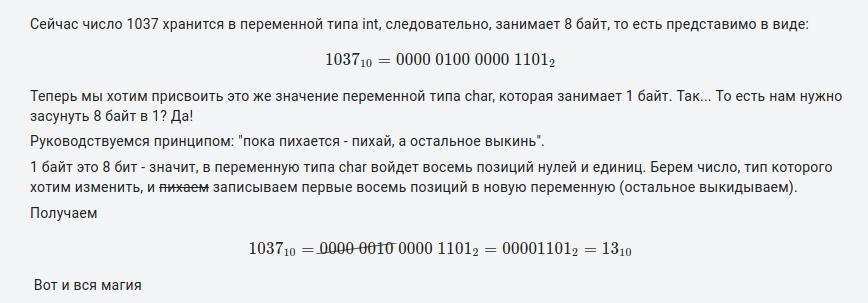

Работа с указателями
Продолжите программу. Объявите указатель ptr_a на переменную a и указатель ptr_b на переменную b. Вычислите произведение значений переменных a и b, используя указатели ptr_a и ptr_b. Результат присвойте переменной res и выведите ее в консоль в виде целого числа.Sample Input: 8, 11 Sample Output: 88
Моё:
#include <stdio.h>
int main(void)
{
short a, b;
scanf("%hd, %hd", &a, &b);
short *ptr_a = &a;
short *ptr_b = &b;
short res = *ptr_a * *ptr_b;
printf("%d", res);
return 0;
}
|
------------------------------------------------------------------------------------------------------------------------------Продолжите программу. Объявите указатель ptr_a на переменную a и указатель ptr_b на переменную b. Поменяйте адреса указателей ptr_a и ptr_b между собой, используя третий вспомогательный указатель с обобщенным типом void*. Выведите в консоль в одну строчку через пробел целочисленные значения, на которые ссылаются указатели ptr_a и ptr_b именно в таком порядке: <значение для ptr_a> <значение для ptr_b>
Sample Input: -5, 10
Sample Output:10 -5
Моё:
#include <stdio.h>
int main(void)
{
short a, b;
scanf("%hd, %hd", &a, &b);
short *ptr_a = &a;
short *ptr_b = &b;
void *p;
p = ptr_a;
ptr_a = ptr_b;
ptr_b = p;
printf("%d %d", *ptr_a, *ptr_b);
return 0;
}
|
Сначала делал так: *p = ptr_a; и получалось, что в переменную указателя p заносил адрес указателя ptr_a. Хотя это не условию задания, но формально, если бы тип был не void, то никаких ошибок бы не было. Но видимо в void ничего нельзя заносить. И по заданию, если адрес указателя поменять (не переменную указателя), то правильный синтаксис: p = ptr_a;
------------------------------------------------------------------------------------------------------------------------------Объявите указатель с именем ptr_var на переменную var.
Объявите еще один указатель с именем ptr_ch для типа char и присвойте ему адрес, хранимый указателем ptr_var. (Не забудьте прописать операцию приведения типов.)
Выведите в консоль целочисленное значение, на которое ссылается указатель ptr_ch.
Sample Input:1037
Sample Output:13
Моё:
#include <stdio.h>
int main(void)
{
int var;
scanf("%d", &var);
int *ptr_var = &var;
char *ptr_ch = (char *)ptr_var; //объявили указатель и его адресу назначили адрес другого указателя
// Правильно вроде как сначало обьявить указатель: char *ptr_ch, а потом только дать другой алрес: ptr_ch = (char *)ptr_var
printf("%d", *ptr_ch);
return 0;
}
|
Насчет почему из 1037 получаем 13:

обьясню по-другому (как в уроке рассказывается). 1037 это 256 * 4 + 13, т.е. в 1037 в ОЗУ хранится как 13 4 0 0 (если int это 4 последовательные ячейки в 1 байт), как известно из лекции адрес переменной это адрес ее первой ячейки, поэтому запись указателя на int в указатель на char позволяет через этот указатель управлять лишь содержимым первой ячейки из 4 ячеек переменной int. а в первой ячейке у нас 13. это значение и выводится при разыменовывании указателя ptr_ch.
------------------------------------------------------------------------------------------------------------------------------Допишите следующую программу. Необходимо все 8 байт (тип double) переменной value вывести в консоль в виде десятичных чисел, записанных в одну строчку через пробел, начиная с первого байта.
Sample Input:0.5 Sample Output:0 0 0 0 0 0 -32 63
Моё:
#include <stdio.h>
int main(void)
{
double value;
scanf("%lf", &value);
char *ptr = (char *)&value;
for(int i = 0; i < sizeof(value); ++i) {
printf("%d ", *ptr);
ptr++;
}
return 0;
}
|
Не пойму char *ptr = (char *)&value; Почему не char *ptr = (char)&value;
В этом случае warning: initialization of ‘char *’ from ‘char’ makes pointer from integer without a cast [-Wint-
conversion] (инициализация ‘char *’ из ‘char’ преобразует указатель в целое число без приведения)
И почему -32 63 вывод.
---------------------------------------------------------------------------------------------------------------------------Напишите программу, которая читает из входного потока целое число в переменную value типа int. Каждые два байта этой переменной следует обработать по следующему алгоритму:
1. Представить два байта в виде целого числа.
2. Увеличить каждое полученное двухбайтовое число на единицу.
3. Увеличенное значение снова побайтно перенести в соответствующие ячейки переменной value.
Полученное значение переменной value вывести в консоль в виде одного целого числа.
P. S. При написании программы гарантируется: char = 1 байт; short = 2 байта; int = 4 байта; double = 8 байт.
Sample Input:325476
Sample Output:391013
Моё:
#include <stdio.h>
int main(void)
{
int value;
int x1, x2;
scanf("%d", &value);
short *ptr = (short *)&value;//указатель на 2 байта переменной value
*ptr +=1; //значение числа в первых двух байтах увеличили на 1
*(ptr + 1) +=1; //значение числа во вторых двух байтах увеличили на 1
printf("%d", value);
return 0;
}
|
---------------------------------------------------------------------------------------------------------------------------Продолжите программу. Прочитайте из входного потока целое число в переменную value типа int. Объявите массив с именем ar_d типа char и длиной для побайтного хранения числа типа int. Скопируйте значение каждого байта переменной value в массив ar_d (значение самой переменной value не менять). Выведите значения элементов массива ar_d в консоль в виде десятичных чисел в одну строчку через пробел.
Sample Input:1025
Sample Output:1 4 0 0
Моё:
#include <stdio.h>
int main(void)
{
int value;
scanf("%d", &value);
//char ar_d[] = {0};
char ar_d[sizeof(int)]; //массив длиной равной размеру int
char *ptr = (char *)&value; // указатель на первый байт переменной value
for (int i=0; i<sizeof(value); i++, ptr++)
{
ar_d[i] = *ptr;
printf("%d\n", ar_d[i]);
}
return 0;
}
|
Если массив объявить так: char ar_d[] = {0};, то скрипт выдает правильный результат, но в конце выдает ошибку:
*** stack smashing detected ***: terminated Аварийный останов (стек памяти сброшен на диск)Наверное когда массив не имеет определенной длины, это несмотря на конечный цикл, все равно источник проблем.
========================================================================================================================
Массивы
Прочитайте из входного потока целые числа в переменные var_1, var_2 и var_3, записанные в одну строчку через запятую. Побайтно занесите их значения в массив типа char (в порядке var_1, var_2, var_3). Выведите в одну строчку через пробел по порядку значения массива в виде беззнаковых десятичных чисел.Sample Input:7356, 6575729, 100433564
Sample Output:188 28 113 86 100 0 156 126 252 5 0 0 0 0
Моё:
#include <stdio.h>
int main(void)
{
short var_1;
int var_2;
long long var_3;
scanf("%hd, %d, %lld", &var_1, &var_2, &var_3);
char array[sizeof(var_1)+sizeof(var_2)+sizeof(var_3)];
//printf("razmer=%zu\n", sizeof(array));
char *ptr = (char *)&var_1;
//*array = (char *)&var_1;
for (int i=0; i<(sizeof(var_1)+sizeof(var_2)+sizeof(var_3)); i++, ptr++)
{
if (i == sizeof(var_1)) ptr = (char *)&var_2;
else
if (i == (sizeof(var_1) + sizeof(var_2))) ptr = (char *)&var_3;
array[i] = *ptr;
printf("%hhu ", array[i]);
}
return 0;
}
|
1. Если выводить через printf("%d ", array[i]); то почему некоторые числа со знаком минус, а если выводить как printf("%u ", array[i]); то эти числа из 10 цифр?
2. Почему нельзя массив использовать в качестве указателя? Пытался сделать *array = (char *)&var_1; но выводит ошибку.
--------------------------------------------------------------------------------------------------------------------------Пример занесения чисел из входного потока в массив
Необходимо из входного потока читать целые числа (по одному), пока не встретится число 78. Все прочитанные числа по порядку заносить в массив ar, используя указатель ptr_ar (кроме последнего числа 78). Вывести в консоль прочитанные значения из массива ar в одну строчку через пробел в порядке их чтения.
Sample Input:1 6 4 2 0 -100 496 3 5 78 101 102 103
Sample Output:1 6 4 2 0 -100 496 3 5
Моё:
#include <stdio.h>
int main(void)
{
int ar[100], num;
int * const ptr_ar = ar;
for (int i=0; i<100; i++)
{
scanf("%d", &num);
if (num !=78)
{
ar[i] = num;
printf("%d ", num);
}
else break;
}
return 0;
}
|
Другое:
#include <stdio.h>
int main(void)
{
int ar[100];
int * const ptr_ar = ar;
int x, i = 0;
while (scanf("%d", &x) == 1 && x != 78) {
*(ptr_ar + i) = x;
i++;
}
for (int j = 0; j < i; j++) {
printf("%d ", ar[j]);
}
return 0;
}
|
В int * const ptr_ar = ar; создали указатель с неизменяемым адресом.
--------------------------------------------------------------------------------------------------------------------------Необходимо после каждого элемента со значением 5 массива digs вставлять новые элементы со значениями: -1 - после первой найденной пятерки; -2 - после второй пятерки и т.д. Обратите внимание, что при вставке новых значений, последние элементы массива digs могут теряться. Также следует учитывать, что элемент со значением 5 может отсутствовать в массиве digs (тогда ничего вставлять не нужно). Выведите в консоль по порядку значения всех прочитанных + добавленных элементов массива digs в одну строчку через пробел.
Sample Input: 1 2 5 5 3 4 5 6
Sample Output:1 2 5 -1 5 -2 3 4 5 -3
Моё:
#include <stdio.h>
#define TOTAL 10
int main(void)
{
int digs[TOTAL] = {0};
size_t count = 0;
size_t sz_ar = sizeof(digs) / sizeof(*digs);
int new_digs = -1;
while(count < sz_ar && scanf("%d", &digs[count]) == 1)
count++;
for (int i=0; i<count; i++)
{
if (digs[i] == 5)
{
//если count уже добрали до TOTAL, то уменьшим
count = count == TOTAL ? count -1 : count;
for (int k=count; k > i+1; k--)
{
digs[k] = digs[k-1];
}
digs[i+1] = new_digs;
new_digs -=1;
count +=1;
if (count > TOTAL) count = TOTAL;
i++;
}
}
for (int i=0; i < count; i++)
{
printf("%d ", digs[i]);
}
return 0;
}
|
Другое:
#include <stdio.h>
#define TOTAL 10
int main(void)
{
int digs[TOTAL] = {0};
size_t count = 0;
size_t sz_ar = sizeof(digs) / sizeof(*digs);
int new_digs = -1;
while(count < sz_ar && scanf("%d", &digs[count]) == 1)
count++;
int num = -1;
for ( int i = 0; i < count; ++i ) {
if ( digs[ i ] == 5 ) {
count = count < TOTAL ? count + 1 : count;
for ( int j = count - 1; j > i; j-- )
digs[ j ] = digs[ j - 1 ]; // сдвигаем вправо
if ( i + 1 < TOTAL )
digs[ i + 1 ] = num--; // возможен выход за пределы i + 1
}
}
for ( int i = 0; i < count; i++ )
printf( "%d ", digs[ i ] );
return 0;
}
|
1. count = count < TOTAL ? count + 1 : count; заменяет мои:
count = count == TOTAL ? count -1 : count;
и
count +=1;
if (count > TOTAL) count = TOTAL;
2. digs[ i + 1 ] = num--
Заменяет мои две строки:
digs[i+1] = new_digs;
new_digs -=1;
-------------------------------------------------------------------------------------------------------------------------В программе ниже выполняется считывание целочисленных значений из входного потока с их последовательной записью в массив vls размерностью 3 x 5 (3 строки и 5 столбцов). Необходимо объявить еще один массив с именем mean типа double и размерностью 3 элемента. В элементы массива mean следует записать среднее арифметическое каждой строки массива vls. Выведите в консоль значения элементов массива mean (по порядку) в одну строчку через пробел с точностью до сотых.
Sample Input: 1 2 3 4 5 6 7 8 9 10 11 12 13 14 15
Sample Output:3.00 8.00 13.00
Моё:
#include <stdio.h>
#define ROWS 3
#define COLS 5
int main(void)
{
short vls[ROWS][COLS] = {0};
short *ptr_vls = &vls[0][0];
short x;
for(int i = 0;i < ROWS * COLS && scanf("%hd", &x) == 1; ++i)
*ptr_vls++ = x;
ptr_vls = &vls[0][0]; //воткнули указатель на 1 элемент vls
double mean[3];
double summa =0.0;
int i=0;
for (int count =0; count <15; count++, ptr_vls++)
{
summa +=*ptr_vls;
//printf("summa=%f\n", summa);
if(count==4 || count==9 || count==14)
{
mean[i] = summa/5.0;
//printf("mean[i]=%.2f\n", mean[i]);
summa =0.0;
i +=1;
}
}
for (int i=0; i<3; i++)
{
printf("%.2f ", mean[i]);
}
return 0;
}
|
Другое:
#include <stdio.h>
#define ROWS 3
#define COLS 5
int main(void)
{
short vls[ROWS][COLS] = {0};
short *ptr_vls = &vls[0][0];
short x;
for(int i = 0; i < ROWS * COLS && scanf("%hd", &x) == 1; ++i)
*ptr_vls++ = x;
double mean[3] = {0};
for (int i = 0; i < ROWS; i++)
{
for (int j = 0; j < COLS; j++)
mean[i] += (double)vls[i][j];
mean[i] /= COLS;
}
for (int i = 0; i < 3; i++)
printf("%.2f ", mean[i]);
return 0;
}
|
----------------------------------------------------------------------------------------------------------------------------Продолжите программу, в которой из консоли считываются целочисленные значения в два массива с именами a и b, каждый размерностью 3 x 4. Объявите еще один целочисленный двумерный массив res той же размерности, значения каждого элемента которого должны быть равны сумме соответствующих элементов массивов a и b, то есть, по следующей формуле:
res[i][j] = a[i][j] + b[i][j]
Выведите в консоль полученный массив res в виде таблицы целых чисел из 3 строк и 4 столбцов. В каждой строке числа должны быть
записаны через пробел. В начале и конце строк пробелов быть не должно.
Sample Input:
1 2 3 4 5 6 7 8 9 10 11 12
2 3 2 0 5 3 5 8 1 24 32 10
Sample Output:
3 5 5 4 10 9 12 16 10 34 43 22
Моё:
#include <stdio.h>
#define ROWS 3
#define COLS 4
int main(void)
{
int a[ROWS][COLS] = {0};
int b[ROWS][COLS] = {0};
int *ptr_a = &a[0][0];
int *ptr_b = &b[0][0];
int x;
for(int i = 0;i < ROWS * COLS && scanf("%d", &x) == 1; ++i)
*ptr_a++ = x;
for(int i = 0;i < ROWS * COLS && scanf("%d", &x) == 1; ++i)
*ptr_b++ = x;
int res[3][4];
for (int row=0; row<3; row++) //по строкам
{
for (int cols=0; cols<4; cols++) //по столбцам
{
res[row][cols] = a[row][cols] + b[row][cols];
cols == 3 ? printf("%d\n", res[row][cols]) : printf("%d ", res[row][cols]);
}
}
return 0;
}
|
---------------------------------------------------------------------------------------------------------------------------Напишите программу в которой на двумерное игровое поле размерностью 10 x 10 случайным образом размещаются 12 "мин" так, чтобы они не соприкасались друг с другом (вокруг клетки с миной не должно быть других мин). Игровое поле должно быть представлено двумерным массивом с именем pg, типом char и размерностью 10 х 10. Пустые клетки (без мин) должны принимать значение 0, а клетки с минами помечаются символом '*'.
Моё:
#include <stdio.h>
#include <stdlib.h>
#include <time.h>
#define SIZE 10
#define MINES 12
int main(void)
{
char pg[SIZE][SIZE] = {0};
srand(time(NULL));
int range = 10, x, y, count=0;
while(count < MINES)
{
x = rand() % range;
y = rand() % range;
if(pg[x][y]==0 && pg[x+1][y]==0 && pg[x-1][y]==0 && pg[x][y+1]==0 && pg[x][y-1]==0)
{
//printf("Есть мина с x=%d y=%d\n", x, y);
pg[x][y] = 1;
count +=1;
}
}
for (int row = 0; row < SIZE; row++)
{
for (int cols = 0; cols < SIZE; cols++)
{
cols == SIZE-1 ? printf("%d\n", pg[row][cols]) : printf("%d ", pg[row][cols]);
}
}
return 0;
}
|
1.
warning: implicit declaration of function ‘time’ [-Wimplicit-function-declaration] 15 | srand(time(NULL));Устранил когда включил заголовок #include <time.h>
2. Не решил как одновременно выводить * и 0. Если printf("%c,), то * нормально выводится, но вместо 0 видимо пробел.
Если использовать спецификатор для чисел %d, то 0 нормально, а вместо * число 42. В конце концов решил мину обозначать 1 и
спецификатор %d.
==========================================================================================================================
Массив указателей
1. Массив указателейПродолжите программу. В массиве строк str хранится информация о count товарах, каждый представлен в формате:
<наименование товара>: <идентификатор>; <цена>; <вес>
Здесь идентификатор - целое число; цена - целое число; вес - вещественное число.
Необходимо массив указателей p_sort сформировать так, чтобы они ссылались на отсортированные строки по убыванию веса товара. (Сортировку лучше выполнять непосредственно массива p_sort.) Выведите в консоль в одну строчку через пробел наименования товаров, отсортированные по убыванию веса товара.
Sample Input: часы: 10; 5430; 0.3 компьютер: 13; 132045; 1.23 монитор: 1; 12300; 0.74 колонки: 2; 3245; 0.27 стол: 105; 3400; 5.7 Sample Output: стол компьютер монитор часы колонки
Моё:
#include <stdio.h>
#include <string.h>
#include <stdlib.h> // atoi atof
#define TOTAL 10
int main(void)
{
char str[TOTAL][50], *p_sort[TOTAL];
int count = 0;
while(count < TOTAL && fgets(str[count], sizeof(str)-1, stdin))
{
char* ptr_n = strrchr(str[count], '\n');
if(ptr_n != NULL)
*ptr_n = '\0';
count++;
}
// здесь продолжайте программу
double max_weight;
int pos;
char tmp_str[50];
char *prt;
for (int i = 0; i < count; i++)
{
prt = (strrchr(str[i], ';') + 1);
max_weight = atof(prt);
pos = i;
for (int k = i+1; k < count; k++)
{
prt = (strrchr(str[k], ';') + 1);
//printf("k=%d, prt=%s\n", k, prt);
if (atof(prt) > max_weight)
{
max_weight = atof(prt);
pos = k;
}
}
if (pos != i)
{
strcpy(tmp_str, str[i]);
strcpy(str[i], str[pos]);
strcpy(str[pos], tmp_str);
}
//printf("1str[%d]=%s\n", i, str[i]);
}
//вывод
for (int i = 0; i < count; i++)
{
//printf("otsort str[%d]=%s\n", i, p_sort[i]);
p_sort[i] = str[i];
while(*p_sort[i] != ':')
{
printf("%c", *p_sort[i]);
p_sort[i] ++;
}
if (i != (count - 1))
{
printf(" ");
}
}
return 0;
}
|
Другое:
#include <stdio.h>
#include <string.h>
#include <stdlib.h>
#define TOTAL 10
int main(void)
{
char str[TOTAL][50], *p_sort[TOTAL];
int count = 0;
while(count < TOTAL && fgets(str[count], sizeof(str)-1, stdin))
{
char* ptr_n = strrchr(str[count], '\n');
if(ptr_n != NULL)
*ptr_n = '\0';
p_sort[count] = &str[count][0]; //почему не &str[count]
count++;
}
// здесь продолжайте программу
for (int i = count - 1; i > 0; i--) {
for (int j = 0; j < i; j++) {
double x = atof((strrchr(p_sort[j], ';') + 1));
double y = atof((strrchr(p_sort[j+1], ';') + 1));
if (x < y) {
char* tmp = p_sort[j];
p_sort[j] = p_sort[j+1];
p_sort[j+1] = tmp;
}
}
}
//вывод
for (int i = 0; i < count; i++) {
char *good = p_sort[i];
while (*good != ':')
printf("%c", *(good++));
printf(" ");
}
return 0;
}
|
---------------------------------------------------------------------------------------------------------------------------Напишите программу, которая читает строку из входного потока (строку целиком до символа переноса строки). Необходимо ее закодировать азбукой Морзе, где каждой букве ставится в соответствие код (в виде фрагмента строки) из точки и тире. После каждой закодированной буквы должен идти пробел (символ окончания кода буквы). После последнего кода пробела быть не должно (в конце строки).
Коды азбуки Морзе приведены ниже для латинского алфавита (большие и малые буквы кодируются одинаково), цифр и символа пробела: Пробел -...-
Результат кодирования вывести в консоль виде строки.
P. S. Само кодирование лучше реализовать в виде отдельной функции, которой передается формируемая строка, исходная строка и массив азбуки Морзе. Sample Input: Sergey Balakirev
Sample Output: ... . .-. --. . -.-- -...- -... .- .-.. .- -.- .. .-. . ...-
Моё:
#include <stdio.h>
#include <string.h>
void kodirov_morse(char *str, char *str_morse)
{
char symbols[] = "AJS2BKT3CLU4DMV5ENW6FOX7GPY8HQZ9IR10 ";
char symbols_small[] = "ajs2bkt3clu4dmv5enw6fox7gpy8hqz9ir10 ";
char *morse[] = {".-", ".---", "...", "..---", "-...", "-.-", "-",
"...--", "-.-.", ".-..", "..-", "....-", "-..", "--",
"...-", ".....", ".", "-.", ".--", "-....", "..-.",
"---", "-..-", "--...", "--.", ".--.", "-.--",
"---..", "....", "--.-", "--..", "----.", "..", ".-.",
".----", "-----", "-...-"};//пример массива из строковых литералов
for (int i = 0; i < strlen(str); i++)
{
for (int ind = 0; ind < strlen(symbols); ind++)
{
if (str[i] == symbols[ind] || str[i] == symbols_small[ind])
{
strcat(str_morse, morse[ind]);
if (i < strlen(str)) strcat(str_morse, " ");
break;
}
}
}
}
int main(void)
{
char str[100] = {0};
fgets(str, sizeof(str)-1, stdin);
char* ptr_n = strrchr(str, '\n');
if(ptr_n != NULL)
*ptr_n = '\0';
char str_morse[500] = {0};
kodirov_morse(str, str_morse);
puts(str_morse);
return 0;
}
|
---------------------------------------------------------------------------------------------------------------------------Напишите программу, которая читает закодированную строку с помощью азбуки Морзе. Коды разделены между собой пробелом. Необходимо ее раскодировать, используя азбуку Морзе из предыдущего занятия:
A .- J .--- S ... 2 ..--- B -... K -.- T - 3 ...-- C -.-. L .-.. U ..- 4 ....- D -.. M -- V ...- 5 ..... E . N -. W .-- 6 -.... F ..-. O --- X -..- 7 --... G --. P .--. Y -.-- 8 ---.. H .... Q --.- Z --.. 9 ----. I .. R .-. 1 .---- 0 ----- Пробел -...-Добавление символа как элемент массива в строку
Полученное сообщение (строку) вывести в консоль.
P. S. Декодирование лучше реализовать в виде отдельной функции, которой передается формируемая строка, исходная строка и массив азбуки Морзе.
Sample Input: -- --- ... -.-. --- .--
Sample Output: MOSCOW
Моё:
#include <stdio.h>
#include <string.h>
void morse_to_str(char *str, char *str_morse)
{
const char symbols[] = "AJS2BKT3CLU4DMV5ENW6FOX7GPY8HQZ9IR10 ";
char *morse[] = {".-", ".---", "...", "..---", "-...", "-.-", "-", "...--", "-.-.", ".-..", "..-", "....-",
"-..", "--", "...-", ".....", ".", "-.", ".--", "-....", "..-.", "---", "-..-", "--...", "--.", ".--.", "-.--",
"---..", "....", "--.-", "--..", "----.", "..", ".-.", ".----", "-----", "-...-"};
char word_morse[10] = ""; //без указания длины массива, указатель на этот массив залез на совсем другую переменную
char *ptr = word_morse;
for (int i = 0; i <= strlen(str_morse); i++)
{
//вытаскиваем слово из str_morse
if (str_morse[i] != 32 && str_morse[i] != '\0') //больше нравится str_morse[i] != ' '
{
*ptr = str_morse[i]; //пример как добавить символ, как элемент массива в строку. strcat не работает
ptr++;
}
if (str_morse[i] == 32 || str_morse[i] == '\0')
{
*ptr = '\0'; //на этой строке почему-то symbols[2] изменяет свое значение на 0,
// пока не поменял char word_morse[] = "" на char word_morse[10] = ""
ptr = &word_morse[0];
for (int j = 0; j < 37; j++)
{
if (!strcmp(morse[j], word_morse))
{
*str = symbols[j];
str++;
if (i != strlen(str_morse)) strcat(str, " ");
if (i == strlen(str_morse)) strcat(str, "\0");
break;
}
}
word_morse[0] = '\0';
}
}
}
int main(void)
{
char str[100] = {0};
fgets(str, sizeof(str)-1, stdin);
char* ptr_n = strrchr(str, '\n');
if(ptr_n != NULL)
*ptr_n = '\0';
char res_str[100] = "";
morse_to_str(res_str, str);
puts(res_str);
return 0;
}
|
Вставка символьного элемента массива в строку
Почему не могу вставить символ в строку c помощью strcat(str, arr[i])if (str_morse[i] != 32) strncat(word_morse, str_morse[i], 1); warning: passing argument 2 of ‘strncat’ makes pointer from integer without a cast
или если: strcat(str, symbols[j]); то warning: passing argument 2 of ‘strcat’ makes pointer from integer without a cast
Как я понял через strcat можно добавлять символы как " " или "\0" (строки 51 и 52), но как элементы char массива arr[i] нельзя.
Решил через использование указателя и перемещение его к следующей итерации:
*str = symbols[j]; str++;
Обнуление массива
Как сделать пустым символьный массив. word_morse[] = "", word_morse[] = {0} не работают. Ожидается выражение в квадратных скобках.word_morse = "" - error: assignment to expression with array type.
Если strcpy(word_morse, " "); то warning: ‘__builtin_memcpy’ writing 2 bytes into a region of size 1 overflows the destination [-Wstringop-overflow=
Сделал так: word_morse[0] = '\0'
Сравнение элемента массива с пробелом
как элемент массива сравнить с пробелом " " (сравнение с кодом 32 не нравится).Решение: нужно сравнивать с символом ' '
4. Несколько часов потратил почему symbols[2] менял значение на пустое. Все из-за команды *ptr = '\0', переменные ptr и symbols никак не связаны, но видимо из-за того что не указал размер массива word_morse указатель ptr ложил '\0' на symbols[2].
======================================================================================================================
Указатели на функцию
Запишите объявление указателя с именем ptr_func на функции, имеющих следующую сигнатуру:double <имя функции>(int, int);
P. S. Указатель ptr_func следует объявлять в глобальной области видимости и без какой-либо инициализации. Кроме объявления указателя в программе больше ничего делать не нужно.
Моё:
#include <stdio.h>
double (*ptr_func)(int, int);
int main(void)
{
return 0;
}
|
----------------------------------------------------------------------------------------------------------------------------Продолжите программу. Необходимо дописать функцию copy_string, которая копирует строку из src в dst с учетом ее максимального размера. Последним параметром функции copy_string должен быть указатель на функцию с сигнатурой: int <имя функции>(const char); Эта дополнительная функция должна возвращать 1, если символ char следует копировать в строку dst, и 0 в противном случае. Объявите в любом допустимом месте программы такую функцию, которая запрещает копирование всех латинских символов: a-z и A-Z.
В функции copy_string реализовать копирование строки из src в dst с проверкой допустимости копирования символов. Если символ копировать запрещено, то он пропускается. Строка dst должна быть корректной Си-строкой (в конце всегда должен быть символ '\0').
Вызовите функцию copy_string для копирования строки str в строку str2 с запретом копирования любых символов латинского алфавита. Выведите полученную строку str2 в консоль.
Sample Input: HelloСергею Балакиреву и всем остальным ученикам!
Sample Output: Сергею Бал
Моё:
#include <stdio.h>
#include <string.h>
void copy_string(char* dst, size_t max_len_dst, const char* src, int (*ptr_funk)(const char)) //указатель на функцию
{
for (int i = 0, k = 0; i < sizeof(src), src[i] != '\0', k < max_len_dst; i++)
{
if (ptr_funk(src[i]))
{
dst[k++] = src[i];
//printf("i=%d k=%d dst[k-1]=%d\n", i, k-1, dst[k-1]);
}
}
dst[strlen(dst)] = '\0';
//printf("i=%d, k=%d\n", i, k);
return;
}
int key_chr(char x)
{
if (strchr("abcdefghijklmnopqrstuvwxyzABCDEFGHIJKLMNOPQRSTUVWXYZ", x) ==NULL) return 1;
return 0;
}
int main(void)
{
char str[100] = {0}, str2[20];
fgets(str, sizeof(str)-1, stdin);
char* ptr_n = strrchr(str, '\n');
if(ptr_n != NULL)
*ptr_n = '\0';
copy_string(str2, 19, str, key_chr);
puts(str2);
return 0;
}
|
Другое:
#include <stdio.h>
#include <string.h>
void copy_string(char* dst, size_t max_len_dst, const char* src, int (*foo)(const char))
{
// здесь продолжайте функцию
int cnt = 0;
for (int i = 0; src[i] && cnt < max_len_dst-1; i++){
if (foo(src[i])){
dst[cnt++] = src[i];
}
}
dst[cnt] = '\0';
}
int main(void)
{
char str[100] = {0}, str2[20];
fgets(str, sizeof(str)-1, stdin);
char* ptr_n = strrchr(str, '\n');
if(ptr_n != NULL)
*ptr_n = '\0';
// здесь продолжайте программу
int not_alphas(char c){
int res = 1;
if ((c >= 'a' && c <= 'z') || (c >= 'A' && c <= 'Z'))
res = 0;
return res;
}
copy_string(str2, sizeof(str2), str, not_alphas);
puts(str2);
return 0;
}
|
format ‘%s’ expects argument of type ‘char *’, but argument 4 has type ‘int’ [-Wformat=]
23 | printf("i=%d, k=%d, dst[k]=%s\n", i, k-1, dst[k-1]);
| ~^ ~~~~~~~~
| | |
| char * int
Так и не понял. Поменял спецификатор %s на %c, можно и %d и ошибки больше не было.
2. почему строка должна выводить только до Бал? Ведь если у нас ограничение в 20, то должно выводить Балакир? Не понимаю какому условию соответствует вывод "Сергею Бал".
здесь кодировка UTF-8 и русские символы 2 байта занимают
----------------------------------------------------------------------------------------------------------------------------Продолжите программу. В функции main из стандартного входного потока читаются целые числа. Необходимо все их сохранять в массиве marks (не более 20). То есть, чисел может быть и больше 20, но сохранять только первые 20 в порядке их считывания.
Допишите функцию sum_ar, которая бы вычисляла сумму чисел переданного ей массива ar. Складывать следует только те числа, для которых переданная функция (через указатель) возвращает истину (не нулевое значение). Полученная сумма должна возвращаться функцией sum_ar.
Указатель на функцию должен инициализироваться любой функцией с сигнатурой: int <имя функции>(int);
В функции main вызовите функцию sum_ar для массива marks, складывая только четные числа (проверка на четность выполняется дополнительной, вспомогательной функцией, которая, затем, передается последним аргументом в функцию sum_ar). Выведите в консоль целое значение, которое вернула функция sum_ar.
Sample Input: 1 2 3 4 5 6 7 8 9 10 11 12 13 14 15 16 17 18 19 20 21 22 23 24
Sample Output: 110
Моё:
#include <stdio.h>
int sum_ar(const int *ar, size_t len_ar, int (*ptr_funk)(int))
{
int result = 0;
for (int i = 0; i < len_ar; i++)
{
if (ptr_funk(ar[i])) result +=ar[i];
}
return result;
}
int get_chetniy(int num)
{
return num % 2 == 0 ? 1 : 0;
}
int main(void)
{
int marks[20] = {0};
int x, count = 0;
while(scanf("%d", &x) == 1) {
if (count <20) marks[count++] = x;
}
printf("%d\n", sum_ar(marks, count, get_chetniy));
return 0;
}
|
Другое:
#include <stdio.h>
int sum_ar(const int *ar, size_t len_ar, int (*foo)(int))
{
// здесь продолжайте функцию
int sum = 0;
for (int i = 0; i < len_ar; i++)
if(foo(ar[i]))
sum += ar[i];
return sum;
}
int main(void)
{
int marks[20] = {0};
int x;
int i = 0;
while(scanf("%d", &x) == 1 && i < sizeof(marks) / sizeof(*marks)) {
// здесь продолжайте программу
marks[i] = x;
i++;
}
int is_even(int n){
return n % 2 == 0;
}
int res = sum_ar(marks, sizeof(marks) / sizeof(*marks), is_even);
printf("%d", res);
return 0;
}
|
---------------------------------------------------------------------------------------------------------------------------Необходимо дописать функцию sort_string, которая бы выполняла сортировку символов переданной строки str (только символов строки, а не всех символов массива) по их возрастанию (неубыванию).
Критерий возрастания (какой символ считать большим, а какой меньшим) задается дополнительной функцией с сигнатурой: int match_ab(const char a, const char b);
Данная функция должна возвращать 1, если a < b, и 0 в противном случае. И, кроме того, все цифровые символы ('0', ..., '9') должны быть "меньше" любых других символов. То есть, при сортировке сначала в строке будут идти цифровые символы (по возрастанию), а затем все остальные (по возрастанию).
Вызовите функцию sort_string для строки str и с функцией сравнения match_ab. Выведите полученную строку str в консоль.
Sample Input: Phone number: 7845037856221
Sample Output: 0122345567788 :Pbeehmnnoru
Моё:
#include <stdio.h>
#include <string.h> //strchr
int match_ab(const char a, const char b)
{
//если a - цифра
if (a > 47 && a < 58)
{
if (b < 47 || b > 58) return 1;
else if (a < b) return 1;
}
else // a -не цифра
{
if (b > 47 && b < 58) return 0;
else //обе не цифры
{
if (a < b) return 1;
}
}
return 0;
}
void sort_string(char *str, size_t max_len, int (*ptr_kriteriy)(char, char))
{
// Ищем наименьший символ и меняем местами с str[i]
int pos;
char tmp;
for (int i = 0; str[i] != '\0'; i++)
{
pos = i;
for (int j = i + 1; str[j] != '\0'; j++)
{
if (ptr_kriteriy(str[j], str[pos])) pos = j;
}
if (pos != i)
{
tmp = str[i];
str[i] = str[pos];
str[pos] = tmp;
}
}
}
int main(void)
{
char str[100] = {0};
fgets(str, sizeof(str)-1, stdin);
char* ptr_n = strrchr(str, '\n');
if(ptr_n != NULL)
*ptr_n = '\0';
sort_string(str, 100, match_ab);
puts(str);
return 0;
}
|
int match_ab(const char a, const char b)
{
if (a == ' ') // "костыль" что бы пробел был после цифр ':'
return a + 25 > b; // понятне a +=25;
if (b == ' ') // "костыль" что бы пробел был после цифр ':'
return a > b + 25;
return a > b;
}
Так в другом решении.
============================================================================================================================
Массив из указателей на функцию
Необходимо объявить четыре критериальные функции для отбора целочисленных значений при суммировании в функции sum_ar. Все критериальные функции должны иметь сигнатуру: int <имя функции>(int ); и быть следующими:- is_odd: возвращает 1 для нечетных значений и 0 для четных;
- is_positive: возвращает 1 для неотрицательных значений и 0 для отрицательных;
- is_negative: возвращает 1 для отрицательных значений и 0 для неотрицательных;
- deflt: возвращает 1 для любых значений.
В функции main объявить массив указателей с именем funcs на объявленные критериальные функции (в порядке их перечисления в задании). Затем, сформировать массив marks из прочитанных целочисленных значений в количестве не более 20 (необходима проверка на максимальное количество записываемых данных). После этого в операторе switch выполнить подсчет суммы с указанием соответствующей критериальной функции из массива funcs.
Sample Input: 1 5 4 3 5 6 78 89 56 43 456 45 645 45 44 3 1 4
Sample Output: 884
Моё:
#include <stdio.h>
#include <stdlib.h>
//здесь набор критериальных функций с сигнатурами:
int is_odd(int num)
{
//printf("num=%d, return=%d\n", num, abs(num) % 2 != 0);
return abs(num) % 2 != 0;
}
int is_positive(int num)
{
return num >= 0;
}
int is_negative(int num)
{
return num < 0;
}
int deflt(int num)
{
return 1;
}
int sum_ar(const int *ar, size_t len_ar, int (*funks)(int))
{
int result = 0;
for(int i = 0; i < len_ar; i++)
{
if(funks(ar[i]))
{
result +=ar[i];
}
}
return result;
}
int main(void)
{
// здесь массив указателей funcs на критериальные функции
int (*funks[]) (int) = {is_odd, is_positive, is_negative, deflt};
int marks[20] = {0};
int item = 0;
scanf("%d", &item); // выбор критерия суммирования
int x, count = 0;
while(scanf("%d", &x) == 1) {
if (count <20) marks[count++] = x;
}
int sum = 0; // переменная для хранения суммы
switch(item) {
case 1: sum = sum_ar(marks, count, funks[0]);
break;
case 2: sum = sum_ar(marks, count, funks[1]);
break;
case 3: sum = sum_ar(marks, count, funks[2]);
break;
default: sum = sum_ar(marks, count, funks[3]);
}
printf("%d", sum);
return 0;
}
|
1. Как объявить функцию с аргументом = массиву из указателей на функции и как вызвать эту функцию
Объявить функцию:
int sum_ar(const int *ar, size_t len_ar, int (*funks)(int))
не нужны никакие квадратные скобки, как я вначале с ними пытался сделать. Ничем от обычного указателя не отличается.
Вызов функции: sum_ar(marks, count, funks[0])
здесь передаем в качестве аргумента определенную функцию из массива с помощью индекса.
2. В моем компиляторе, чтобы выполнить функцию abs, нужно подсоединить файл stlib.h
3. Непонятно почему для return num % 2 != 0; если num < 0, то return вернёт -1. Нужно было заключить выражение в скобки: return (num % 2 != 0); Без них возвращал результат num % 2. Проверил, да все верно.
=======================================================================================================================
==============================================================================================================================
Перечисления enum
Напишите программу, в которой объявляется перечисление с идентификатором menu_item и константами: item_exit = 1, item_c = 2, item_python = 3, item_java = 4В функции main прочитайте из входного потока целочисленное значение и сравните его с одной из констант перечисления. Сравнение следует выполнить с помощью оператора switch. При совпадениях в консоль выведите следующие строки (без кавычек):
item_exit: "Выход"; item_c: "Язык Си"; item_python: "Язык Python"; item_java: "Язык Java".Если ни одна из констант не была выбрана, то вывести строку: "Не верный пункт меню"
Sample Input: 2 Sample Output: Язык Си
Моё:
#include <stdio.h>
enum menu_item {item_exit = 1, item_c = 2, item_python = 3, item_java = 4};
int main(void)
{
//enum menu_item {item_exit = 1, item_c = 2, item_python = 3, item_java = 4};
int number;
scanf("%d", &number);
switch(number) {
case item_exit :
puts("Выход");
break;
case item_c :
puts("Язык Си");
break;
case item_python :
puts("Язык Python");
break;
case item_java :
puts("Язык Java");
break;
default :
puts("Не верный пункт меню");
}
return 0;
}
|
На сайте не принимали решение пока строку enum menu_item {item_exit = 1, item_c = 2, item_python = 3, item_java = 4}; не перетащил в блок вне функции.
В https://stackoverflow.com/questions/49574063/why-is-enum-data-type-always-declared-out-of-main-in-c пишут, что обычно помещают в блок вне функций по причине, что могут использоваться в нескольких функциях.
-------------------------------------------------------------------------------------------------------------------------Перечисление enum в качестве параметра функции
Напишите программу, в которой объявляется перечисление с идентификатором calc_types и константами: _perimetr=1, _square=2
Объявите функцию с именем calc_rect, которая имеет следующие параметры (порядок важен):
ширина прямоугольника width (тип double); высота прямоугольника height (тип double); тип вычислений type (тип calc_types).Функция должна вычислять либо площадь прямоугольника (если types равен _square), либо его периметр (если types равен _perimetr) и возвращать вычисленное значение (тип double).
В функции main прочитайте из входного потока одно целое число (для type) и два вещественных числа (width и height), записанных в одну строчку через пробел. Вызовите функцию calc_rect с передачей ей прочитанных значений в качестве аргументов. Выведите в консоль вычисленное значение с точностью до десятых.
Sample Input: 1 3.5 7.8 Sample Output: 22.6
Моё:
#include <stdio.h>
enum calc_types {_perimetr=1, _square=2};
double calc_rect(double width, double height, enum calc_types type)
{
if (type == _perimetr)
{
//printf("perimetr=%.1f\n", 2 * (width + height));
return 2 * (width + height);
}
if (type == _square)
{
//printf("S=%.1f\n", width * height);
return width * height;
}
}
int main(void)
{
int type;
double height, width;
scanf("%d %lf %lf", &type, &width, &height);
printf("%.1f\n", calc_rect(width, height, type));
return 0;
}
|
double calc_rect(double width, double height, calc_types type) error: unknown type name ‘calc_types’
Решил заменой на double calc_rect(double width, double height, enum calc_types type)
-------------------------------------------------------------------------------------------------------------------------
Инструкция typedef
Напишите программу, в которой объявляется перечисление без идентификатора и константами: _do=1, _re=2, _mi=3, _fa=4, _sol=5, _la=6, _si=7Определите тип этого перечисления как NOTES. Объявите функцию с именем get_major, которая имеет один параметр с типом NOTES. Функция должна возвращать 1, если были переданы значения констант: _do, или _mi, или _sol. В противном случае функция get_major возвращает 0.
В функции main прочитайте из входного потока пять целых чисел в диапазоне [1; 7], записанных в одну строчку через пробел. Выведите в консоль (в одну строчку через пробел) только те числа, для которых функция get_major вернула истинное значение (единицу).
Sample Input: 1 2 3 2 5
Sample Output: 1 3 5
Моё:
#include <stdio.h>
typedef enum {_do=1, _re=2, _mi=3, _fa=4, _sol=5, _la=6, _si=7} NOTES;
int get_major(NOTES number)
{
if (number == _do || number == _mi || number == _sol) return 1; //короче так: return n == _do || n == _mi || n == _sol;
return 0;
}
int main(void)
{
int arr[5] = {0};
for (int i = 0; i < 5 && scanf("%d ", &arr[i]) == 1; i++)
{
//NOTES numb = arr[i];
if (get_major(arr[i])) printf("%d ", arr[i]);
}
return 0;
}
|
error: expected expression before ‘NOTES’
35 | if (get_major(NOTES arr[i])) printf("%d ", arr[i]);
Решил заменой на:
NOTES numb = arr[i];
if (get_major(numb)) printf("%d ", numb);
а еще лучше на: if (get_major(arr[i])) printf("%d ", arr[i])
При вызове функции перед аргументами не надо ставить их типы.